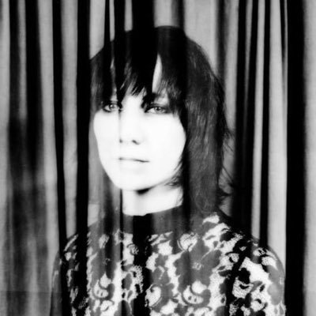
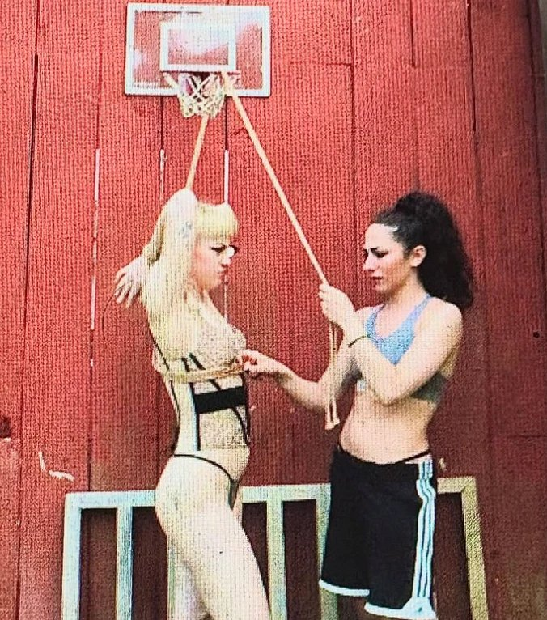

Featured Artists
Evan Neiden
Award-winning director of multiple works of “Alternate Reality Theater,” which The New Yorker has called “a kind of waking dream.” Evan is the founding Artistic Director of Candle House Collective, the company behind cult hits like Lennox Mutual and The Pineapple, a skin-crawling alien thriller staged in a New Jersey motel for one person (who needs to sign a waiver). Variety described it as “one of the best times I’ve ever had in a theater production.” Evan’s work has been featured in The New York Times and American Theatre, with honors from Columbia University, IndieCade, and the Denver Film Festival.

Alison Clancy
Choreographer, director, dancer, and musician whose practice has been honed by almost two decades at the Metropolitan Opera. She originated the longest principal dance solo in Met Opera history, summoning a lightning storm during the overture of Wagner’s Der Fliegende Holländer. Her collaborators include Gogol Bordello, The Flaming Lips, MIT, Baz Luhrmann, Fiona Shaw, William Kentridge, Perrotin Gallery, and others.
Cody Owen Stine
Associate music director of the Tony award winning Broadway musical Hadestown. As composer/lyricist, his work has been produced at Ars Nova, Prospect Theatre, Williamstown Theatre Festival, Joe’s Pub, Edinburgh Fringe Festival, and others. He has toured internationally for Santino Fontana, Cristin Milioti, Eva Noblezada, and others.

Sloondermoon
Art collective specializing in immersive experiential multimedia installations, with work featured at MoMA PS1 and Stage Time Studios.
Jack Styles
Writer, comedian, and engineer from Oakland, California. He has been a house performer at the Upright Citizens Brigade Theatre in New York, written & directed plays and short films, and worked on holograms and new hardware at Meta.